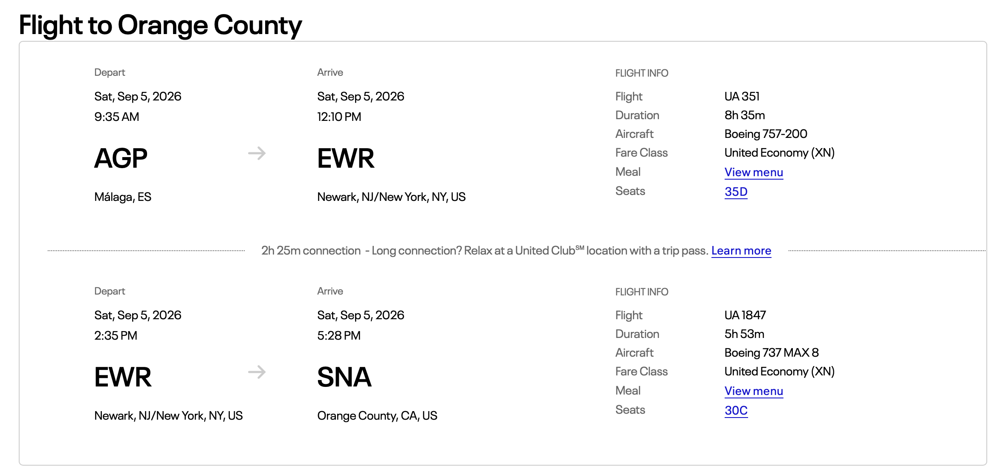

Renee, Per, Lukas, Chloe and Olivia are gathering in southern Spain for a relaxed family trip with a car, pool time and easy day trips.
SNA→AGP→Nerja→Portugal
Trip at a glance
Who travels when
Tue Aug 25Renee, Per & Lukas fly SNA → EWR → AGP.
Wed Aug 26Core group checks into Royal Palm 22 in Nerja.
Thu Aug 27–Fri Aug 28Chloe & Olivia fly SAN → EWR → AGP, then drive to Nerja.
Aug 28–Sep 4Shared Nerja base: pool, beaches, food and optional day trips.
Sat Sep 5Olivia & Chloe planned for AGP → SAN; Lukas has a separate return. Renee & Per continue to Portugal.
Quick reference: The structured flight cards are the itinerary. Original screenshots are kept below as reference captures and should be checked against the airline app.
Reference capture · Royal Palm 22 reservation summary
Transportation · Aug 26–Sep 5
Rental car reservation
Full-size Ford Tourneo Connect or similar for the full stay. The reservation is under Per Johansson.
Confirmation
L6324461737
Total
€536.72
Pickup
Málaga Airport Wed Aug 26 · 8:00 AM
Return
Málaga Airport Sat Sep 5 · 8:00 AM
Saturday timing: Leave Nerja at 6:00 AM, allow about an hour to the airport, refuel and return the car by 8:00 AM before heading to the international terminal.
Wed Aug 26Collect the rental car at Málaga Airport at 8:00 AM, drive to Nerja, settle in, find the Casa Mimosas pool FOB in the drawer by the kitchen table, groceries and pool time.
Thu Aug 27Preparation day: beach supplies, local orientation and a relaxed Nerja evening.
Fri Aug 28Collect Chloe & Olivia in Málaga, drive to Nerja, pool time and an easy dinner.
Sat Aug 29Burriana Beach with reserved cabanas or Balinese beds; Nybakat Café and beach restaurants.
Sun Aug 30Balcón de Europa, Plaza España, old town and optional Nerja Spa.
Mon Aug 31Ronda full-day trip: Puente Nuevo, gorge viewpoints, old town and lunch.
Tue Sep 1Caminito del Rey full-day trip; it is normally open Tuesday–Sunday.
Wed Sep 2Recovery day at the property, pool or spa.
Thu Sep 3Optional Cueva de Nerja, another beach day or Granada and the Alhambra if tickets and energy line up.
Fri Sep 4Final pool or beach day, packing and a final dinner.
Sat Sep 5Leave Nerja at 6:00 AM for Málaga Airport; refuel and return the rental car before the international flights.
Saturday, Aug 29
Burriana Beach day
Probably Nerja’s best all-around beach for this group: an easy walk downhill, plenty of restaurants and water activities. The walk home is uphill, and peak-season parking can be difficult.
Reserve cabanas, hammocks or a Balinese bed ahead of time if available. Breakfast at Nybakat Café is a priority.
Give Ronda its own day rather than combining it with Caminito. Prioritize Puente Nuevo, Alameda del Tajo, the bullring, old town and a long lunch. Add the Arab Baths or Mondragón Palace if energy allows.
Tuesday is the dependable weekday for this excursion. The route is linear, so allow time for access trails, the walk and the return shuttle. Use the official timed ticket and arrive early. Special Monday openings vary.
Ticket instructions: Keep each ticket and the matching ID with the ticket holder; tickets are personal and non-transferable and are validated at entry and exit. Children under 8 are not admitted. Weather closures may allow an exchange subject to availability. Per’s ticket includes visitor-reception parking.
Wednesday, Sep 2
Recovery day
Keep this day intentionally light after Caminito: sleep in, use the pool, visit the spa or take a short walk. There is no fixed excursion.
The Caves of Nerja are the easier local option. Granada and the Alhambra are lower priority because the group has already visited, but they remain possible if tickets and energy line up.
Leave Nerja at 6:00 AM for the international flights. Allow about an hour to Málaga Airport, then refuel and return the rental car before heading to the terminal. Chloe, Olivia and Lukas are scheduled to head back to the United States on Sep 5. Renee and Per leave Spain the same day to meet Peter and Junko in Portugal.
Important passenger note: AGP → SAN is for Olivia and Chloe only. Lukas has his own return booking and should not be grouped into that segment.
UA1988 · Newark (EWR) → San Diego (SAN)4:59 PM → 7:53 PM · Sep 55h 54m · saved schedule reference
Passenger assignment: the plan is Olivia + Chloe on AGP → SAN; Lukas has a separate return. Reconcile any older seat names in the saved screenshots with the current United app.
Open original return schedule

Reference capture · verify passenger assignment before travel
Offline-ready
Keep the family plan handy
The Spain app caches the itinerary, route map and local photos for the installed iPhone web app. Caminito ticket PDFs are kept privately in iCloud instead of being published here. Open the app once while online before departure so the latest version and service-worker cache are installed.
Still download separately: iCloud ticket files, Apple Maps offline areas, airline boarding passes and any external restaurant, property or Instagram pages. External links need a connection unless saved in their own apps.